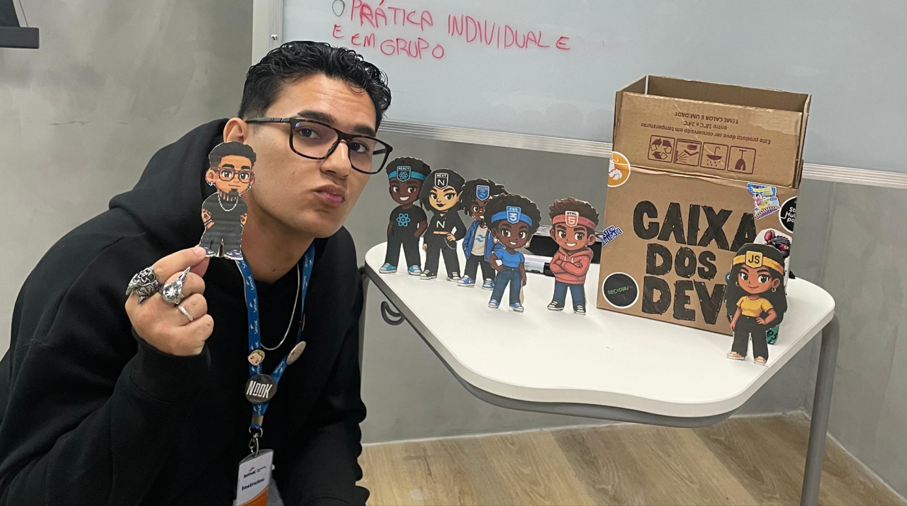

Turma 140 Front-end.
Transformando seu sonho em realidade!
Somos uma turma de 36 alunos, a maior turma do transforme-se.
Muitas ideias ja surgiram daqui, muitas inovadoras e outras totalmente malucas e sem sentido, mas nos divertimos muito e somos unidos como uma família, todos nos ajudamos para tirar a dúvida do próximo e sempre focados em melhorar o que temos para o amanhã.
Temos o foco em Front-end e acessibilidades, somos uma turma focada em tecnologia, desenvolvimento web e inovação digital.
Nossa Turma
Participamos da sala 140 do transforme-se (PE) 2026, com um total de 35 alunos.
Somos do turno noturno, temos aula entre 18:30 até 21:30 (3 horas) de aula de segunda a sexta.

Nosso Professor
Professor Carrasco

Conhecido como Carrasco, nasceu na Zona Leste de São Paulo e, criado na periferia, ele se mudou para Pernambuco em busca de uma melhor qualidade de vida.
Formado em ADS, ele construiu a sua carreira com foco e objetivo prévio. Mesmo não sendo o melhor aluno, ele se dedicou como pôde para terminar a sua formação.
Não sendo seu sonho de começo, a vida lhe mostrou que tudo é possível pelo mesmo propósito, que é mudar a vida de outras pessoas.
Grato pelos profissionais que o transformaram assim, lhe foi passada essa missão, guiado pela sua ancestralidade e sua caminhada continua. Mesmo “carrasco”
Ele mostra que o maior bem que se pode fazer é apoiar e auxiliar na caminhada do outro.
Grade Curricular
- UC1 - Operar sistemas operacionais e aplicativos de escritório
- UC2 - Desenvolver sistemas de informação
- UC3 - Elaborar projetos de aplicações para web
- UC4 - Desenvolver aplicações para websites
- UC5 - Codificar Front-End de aplicações web
- UC6 - Publicar aplicações web
- UC7 - Projeto Integrador Desenvolvedor front-end
Roadmap

Este roadmap apresenta a jornada de aprendizado idealizada para a formação em Desenvolvimento Front-End.
O cronograma está estruturado de forma linear e progressiva através de Unidades Curriculares (UCs), garantindo que cada etapa consolide a base técnica necessária para avançar com segurança rumo ao mercado de trabalho.